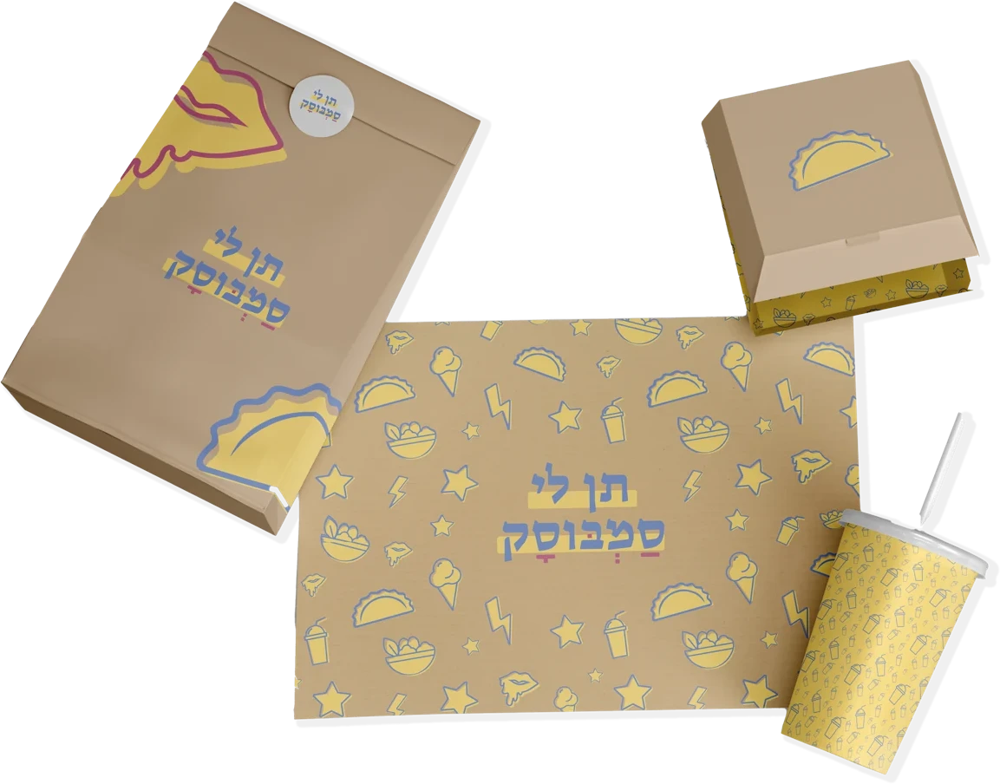

Give Me
Sambusak.
A playful street-food identity spanning packaging, spatial design and a self-ordering experience.
Academic concept — not a client project- Project
- Academic concept
- Scope
- Identity · Packaging · Space · UI
- Subject
- Street food
- Digital
- Self-ordering flow

01Challenge
One dish. A whole brand.
The brief was to build a complete street-food brand around a single dish, from identity and packaging to a physical exhibition stand and a digital ordering experience.
The challenge was to take sambusak, a familiar Middle Eastern pastry, and make it feel relevant, playful and desirable to a younger Tel Aviv audience.
02Concept
Familiar food, younger language.
The concept puts a traditional food in a younger, more expressive visual language. Bold colour and playful graphics sit against deliberately rough cardboard, a contrast between the dish’s roots and a contemporary street-food feel.
Customisation became part of the idea: the sambusak is something people build around their own taste.
03Identity
Built to be seen from a distance.
An energetic palette of yellow, blue and pink, bold graphic symbols and an informal typographic style. The Hebrew wordmark leads, and a small set of illustrated symbols extends the brand beyond the logo into packaging, signage and interfaces.
04Packaging
Cardboard as part of the brand.
The same system runs across takeaway bags, food containers and supporting materials. Plain cardboard surfaces are left visible as part of the brand, not hidden.
05The stand
A branded environment.
The stand is built from cardboard boxes, so the material itself becomes part of the identity. Graphics, packaging and physical form were designed together as one environment, not a neutral display.
06Ordering experience
Build your own sambusak.
A self-ordering tablet carries the same personality into a working ordering flow. Users can pick a ready-made option or build their own by choosing size, dough, filling, toppings and dips.
07One identity, every touchpoint
What changes, and what stays.
The wordmark, palette and illustrated symbols stay fixed. What changes is the surface they sit on.
- PackagingPattern and symbols printed on cardboard, which stays visible.
- StandLarge graphics on stacked boxes, readable from a distance.
- DigitalThe same colours and symbols on the ordering screens, with build-your-own steps.